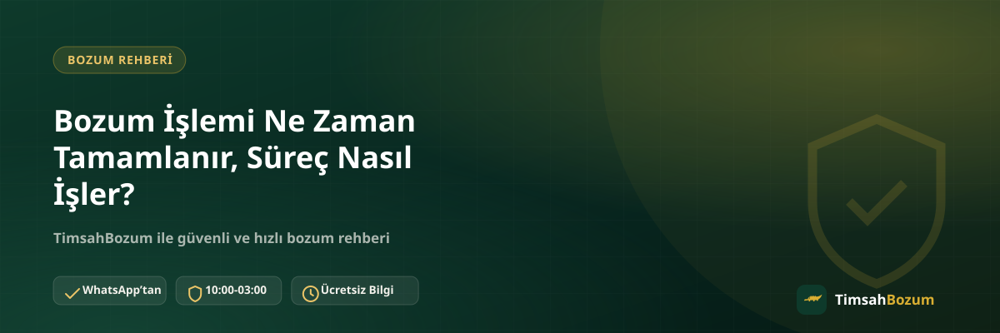

Bozum yaptırmaya karar verenlerin çoğu, ilk mesajı attıktan sonra sürecin tam olarak nasıl ilerleyeceğini merak ediyor. Sürecin hangi adımlardan geçtiğini bilmek hem beklentini doğru kurmanı sağlar hem de kendi tarafında yapman gerekenleri eksiksiz tamamlamana yardımcı olur. Bu yazıda bozum işleminin başlangıcından tamamlanmasına kadar geçen süreci ve bu süreci etkileyen etkenleri adım adım anlatıyoruz.
Bozum İşlemi Hangi Adımlardan Oluşur?
Süreç baştan sona WhatsApp üzerinden yürür ve her adım bir öncekine bağlıdır. Hangi hizmeti bozduracağına karar vermenden ödemeni almana kadar geçen süreç, aşağıdaki dört aşamada özetlenebilir.
WhatsApp'tan İlk Mesajı Nasıl Atmalısın?
Süreç, resmi WhatsApp hattımıza (+90 543 887 21 71) yazmanla başlar. Hangi hizmeti bozdurmak istediğini (Razer Gold, Pokus, Paycell, iTunes veya mobil ödeme) ilk mesajında belirtmen, karşılıklı soru-cevaba gerek kalmadan sürecin bir adım öne geçmesini sağlar.
Kod veya Bakiye Bilgisini Paylaşmak Süreci Nasıl İlerletir?
İkinci adımda, bozduracağın hizmete göre kod bilgini ya da güncel bakiyeni gösteren okunaklı bir ekran görüntüsünü paylaşırsın. Bu bilgi ne kadar eksiksiz ve net olursa, bir sonraki adıma geçiş de o kadar hızlı olur; eksik veya bulanık bir görsel, aynı bilginin tekrar istenmesine yol açar.
Oran Teyidi Süreci Neden Durdurur?
Bilgin paylaşıldıktan sonra sıradaki adım, güncel oranın WhatsApp üzerinden teyit edilmesidir. Sitede yayınlanan oran genel bir referans olduğu için işlem anındaki güncel oranın ayrıca teyit edilmesi gerekir; bu adım atlanmadan bir sonraki aşamaya geçilmez.
Onay Verdikten Sonra Ne Olur?
Oranı onayladıktan sonra ödeme adımına geçilir. Ödeme yöntemi WhatsApp üzerinden görüşülerek belirlenir ve işlem bu şekilde tamamlanmış olur. Onay verene kadar hiçbir taahhüt altına girmiş olmazsın; oranı öğrenip vazgeçmek de mümkündür.
Bozum İşlemi Ne Kadar Sürede Tamamlanır?
Sürecin toplam uzunluğu, her adımın ne kadar hızlı ilerlediğine bağlı olarak değişir; bu yüzden sabit bir süre vermek yerine süreci hızlandıran ve yavaşlatan etkenlere bakmak daha doğru bir yaklaşım. Güncel süreyle ilgili net bir bekleyiş varsa bunu doğrudan WhatsApp'tan sormak en sağlıklısı.
Süreci Hızlandıran Etkenler Nelerdir?
İlk mesajında hangi hizmeti bozduracağını, kod veya bakiye bilgini ve varsa ekran görüntüsünü birlikte paylaşman, karşılıklı mesaj sayısını azaltır. Aynı şekilde oran teyidine hızlı yanıt vermen ve birden fazla işlemin varsa bunları tek seferde bildirmen de süreci öne alır. Örneğin hem bir Razer Gold kodun hem de mobil ödeme bakiyen varsa, ikisini de tek mesajda belirtmen ayrı ayrı yazmaktan daha hızlı sonuçlanır.
Gece Geç Saatte Yazarsam Süreç Nasıl İşler?
TimsahBozum her gün 10:00 ile 03:00 arası aktif. Bu saatler dışında gönderdiğin bir mesaj kaybolmaz, hat açıldığında sırasıyla yanıtlanır ve süreç kaldığı yerden devam eder. Gece geç saatte yazdıysan hemen yanıt beklemek yerine, hattın açılmasını beklemen ve aynı mesajı tekrar tekrar göndermemen en pratik yaklaşım; tekrar mesaj göndermek sırayı değiştirmez.
Süreç Neden Beklenenden Uzun Sürebilir?
Sürecin uzamasına en çok yol açan durumlar; eksik ya da bulanık paylaşılan bir ekran görüntüsü, geçersiz veya daha önce kullanılmış bir kod, ve oran teyidine geç dönülmesi. Bu durumların hiçbiri işlemi iptal etmez, sadece bir sonraki adıma geçişi geciktirir. Doğru bilgiyi paylaştığın anda süreç kaldığı yerden devam eder.
Bozum Süreci Güvenilir mi?
Süreç boyunca hesabına, hattına veya bir uygulamana erişim istenmez; paylaşman gereken tek şey kod bilgisi ya da bakiyeni gösteren bir ekran görüntüsüdür. Üyelik, form doldurma veya kimlik belgesi de gerekmiyor. Hattına gelen bir SMS doğrulama kodunu senden isteyen biri olursa bu talebi karşılamadan işlemi durdurmalısın; böyle bir istek bozum süreciyle ilgisi olmayan bir dolandırıcılık girişimi olabilir. İşlemlerin tamamı yalnızca resmi WhatsApp hattımız üzerinden yürür, mobil ödeme bozdurma gibi bakiye tabanlı hizmetlerde de süreç aynı adımları izler.
İşlem Tamamlandıktan Sonra Ne Yapmalısın?
Ödemen yapıldıktan sonra sürecin son adımı da tamamlanmış olur. WhatsApp görüşmesini ve teyit ettiğin oranı bir süre silmeden saklaman, ileride bir soru çıkması durumunda referans olması açısından faydalı. Bu basit alışkanlık, hem senin hem de hizmet sağlayıcının aynı bilgilere dayanmasını sağlar ve olası bir yanlış anlaşılmayı baştan önler. Özellikle birden fazla kod veya bakiye bozdurduğun işlemlerde, hangi tutarın hangi oranla işlendiğini görebilmek için bu kayıt işine yarar.
Süreç Diğer Bozum Yöntemlerinden Farklı mı?
Bazı platformlarda form doldurmak, üyelik açmak veya bir hesaba giriş yapmak gerekebiliyor; bu da süreci uzatan ek adımlar demek. TimsahBozum'da süreç tek bir kanal üzerinden, WhatsApp yazışmasıyla ilerliyor ve ek bir form ya da üyelik adımı yok. Bu, hem paylaşman gereken bilgi miktarını azaltıyor hem de sürecin kaç adımdan oluştuğunu baştan net şekilde bilmeni sağlıyor.
İlgili Yazılar
- Bozum İşlemi Yaparken Nelere Dikkat Etmeli
- Bozum İşleminde Hesabıma Erişim Veriyor muyum?
- Bozum Oranları Neden Hizmetten Hizmete Değişir?
Süreci başlatmaya hazırsan WhatsApp hattımıza yazarak kod veya bakiye bilgini paylaşabilirsin.